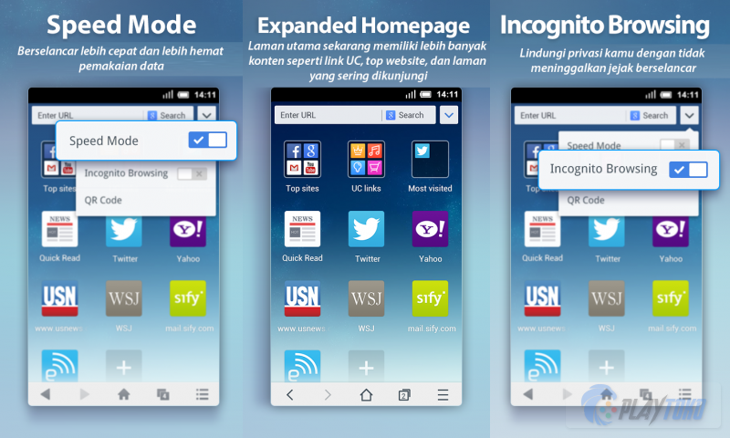
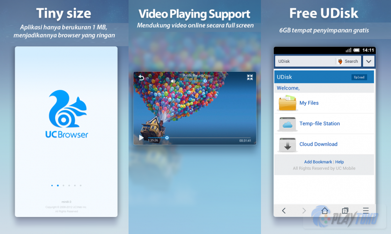

UC Browser Mini adalah browser alternatif untuk Android yang menawarkan kecepatan yang tinggi dan berbagai macam fitur canggih yang akan memanjakan kamu.
UC Browser Mini menawarkan kecepatan yang tinggi dan fitur-fitur canggih yang tidak dimiliki browser lainnya, keunggulan tersebut membuat UC Browser menjadi salah satu browser terbaik untuk pengguna Android pada saat ini. Dari segi penampilan memang terlihat biasa saja, tapi aplikasi ini menawarkan begitu banyak kelebihan lain sehingga rasanya kamu tidak akan mempermasalah hal sepele seperti penampilan.
UC Browser Mini adalah versi mini dari UC Browser biasa. Kecepatan tinggi yang mereka klaim terbukti dari pengalaman penulis berselancar di dunia maya menggunakan UC Browser, ternyata memang jauh lebih cepat dari Chrome atau Opera atau browser bawaan Android. Ada fitur speed dial untuk memudahkan akses ke situs-situs favorit kamu dengan lebih cepat lagi.

Fitur incognito dan pengaturan download juga membuat browser ini secanggih browser di PC. Ada juga menu pemilihan bahasa jadi kamu bisa memilih Bahasa Indonesia untuk UC Browser Mini kamu. Tapi ini berarti mengorbankan sedikit space yaitu adanya tampilan menu yang menurut penulis agak terlalu penuh isinya. Banyak juga pengaturan-pengaturan lanjut lainnya yang tersedia, membuat layar gadget yang kecil akan habis termakan oleh menu.
Untuk mengatasinya, kamu bisa menyalakan fitur full screen yang juga tersedia. Selain itu ada menu yang menurut penulis agak kurang berguna tapi mungkin disukai orang lain yaitu "night mode" atau menu malam di mana warna akan dibalik sehingga menjadi lebih enak dilihat dalam kondisi cahaya yang redup.

Kalau kamu memiliki gadget yang nggak terlalu canggih dan cenderung lemot, maka UC Browser Mini tanpa diragukan lagi akan membuat kamu jatuh cinta pada pandangan pertama. Kecepatannya benar-benar membantu berselancar di web, terutama pas koneksi internet lagi lemot.